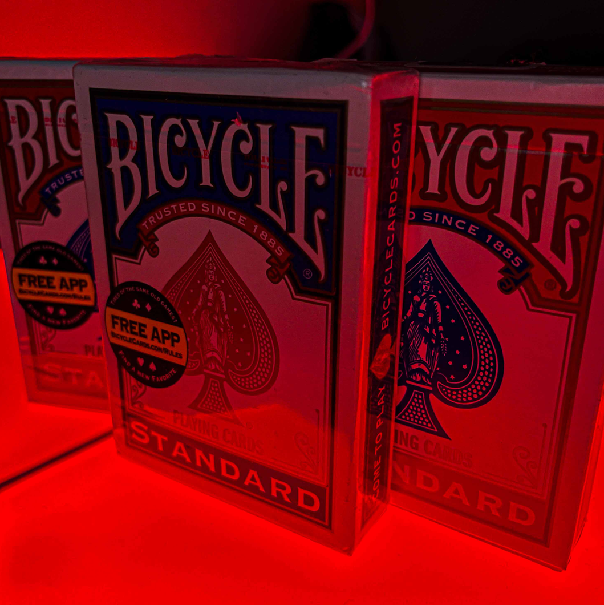
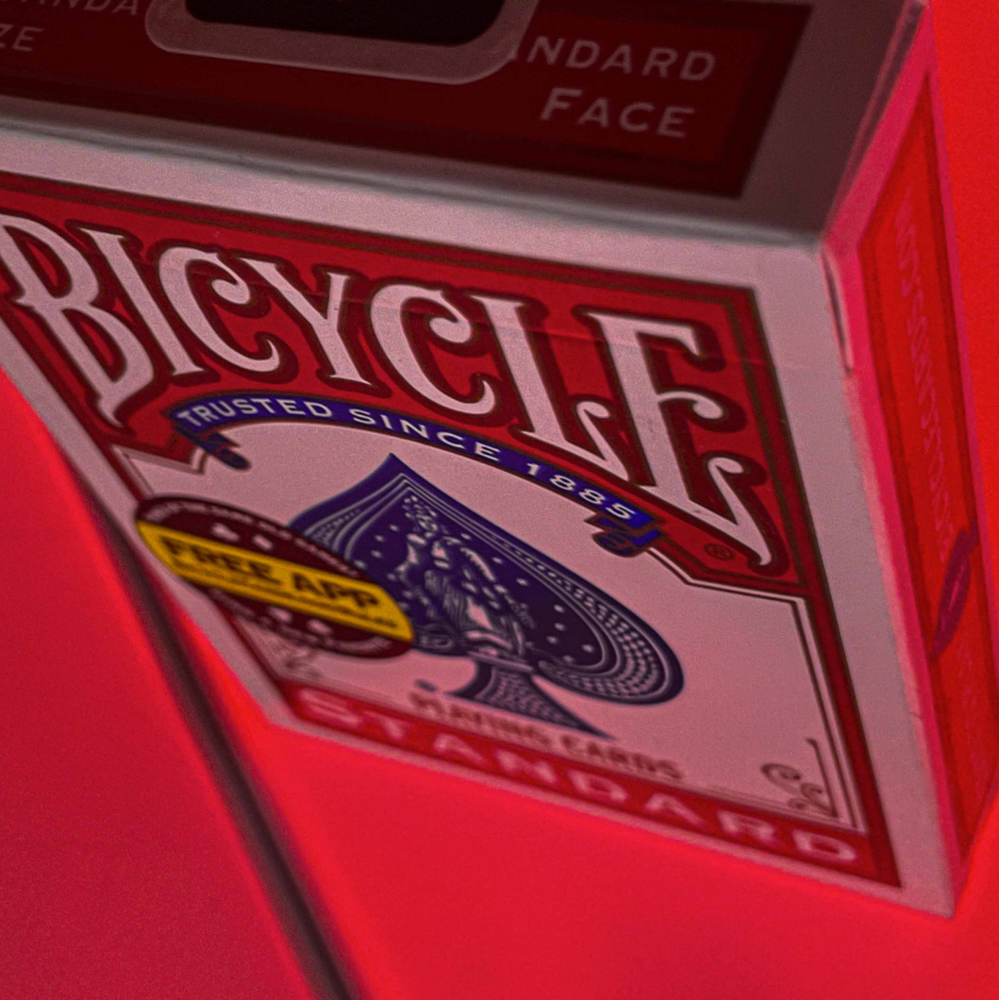
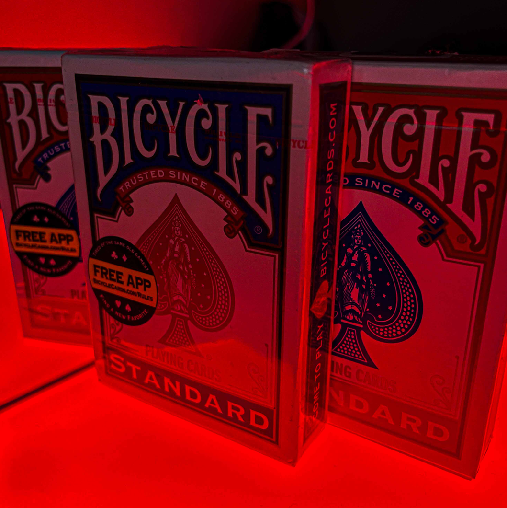
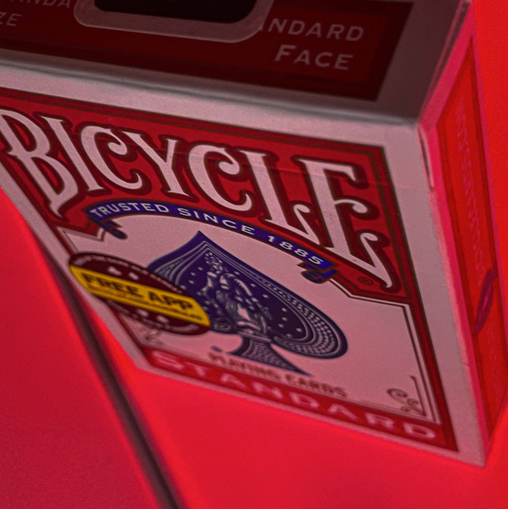

About New Cards and Gimmics in Them

Bicycle Rider Back (or The Standard) are some of the most popular playing cards in the world. United States Playing Card Company has been printing them for over 130 years, with players and magicians choosing them for its cheap price, high and consistent stock quality with Air-Cushion finish and recognizable design.
Bicycle playing cards are a great choice for everyday use and practice. Many of our customers believe that 'bikes' are best playing cards out there for magic tricks and poker.
In fact, a lot of gimmicks suited to work with blue or red bicycles
Old Collections
 



About Old and New Cards
We are magic & cardistry enthusiasts. Based in Kyiv, we've been curating a collection of finest playing cards produced by the United States Playing Card Company and magic props. We helped connect talented magicians and cardists across Ukraine through our live meetups, and sent 35000000000000+ orders worldwide.
If you were looking for a gift to a freind, brother, father, husband, poker player or a card collector for a New Year, check out our shop. We're now carrying new playing cards from the USA, produced by theory11: purple Monarchs and new Provisions. New additions expected every week!